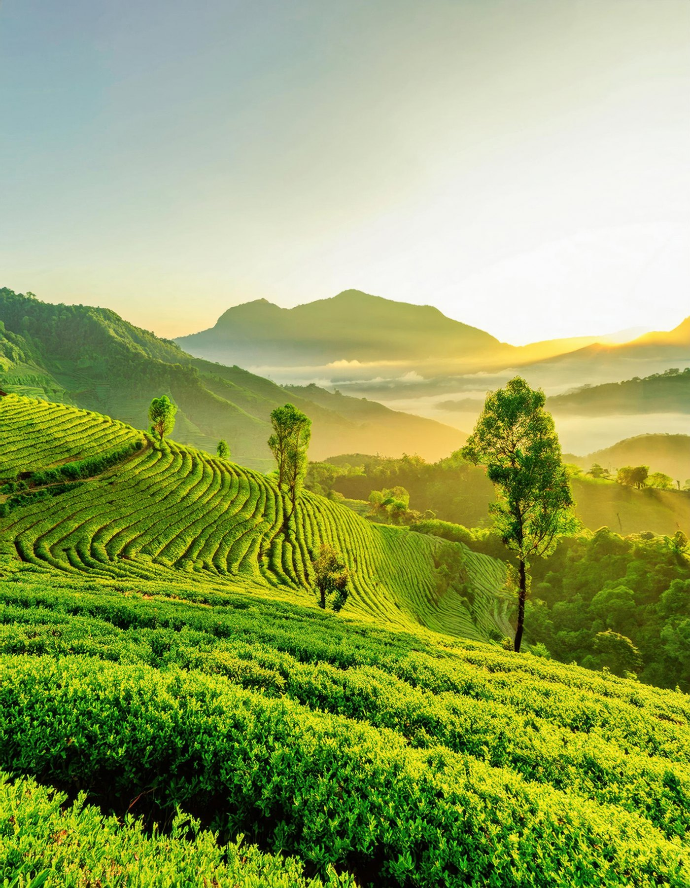
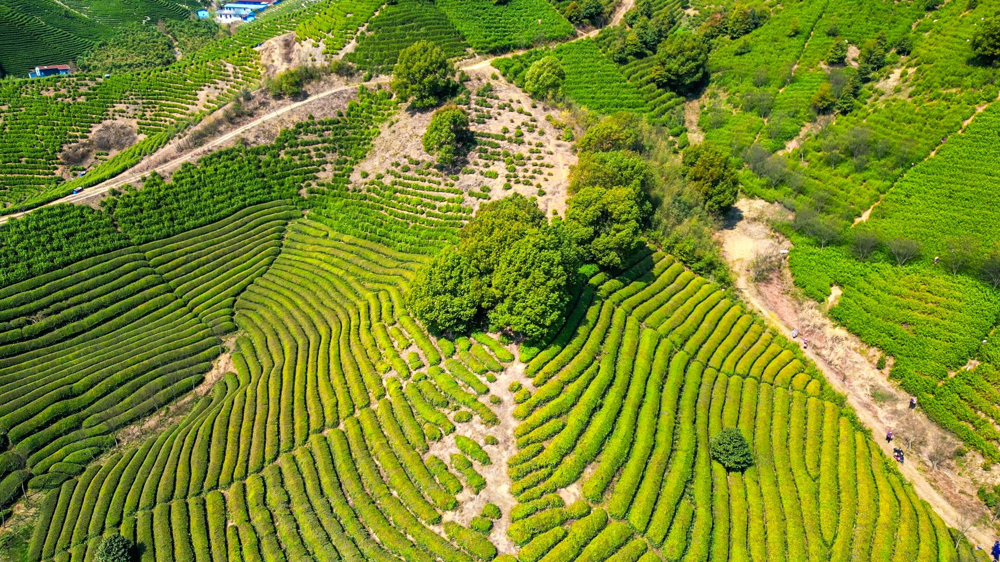
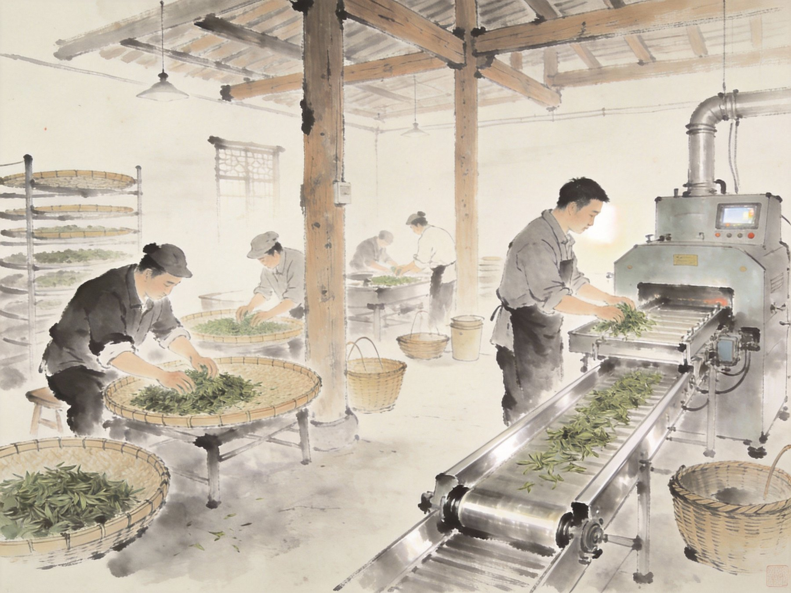
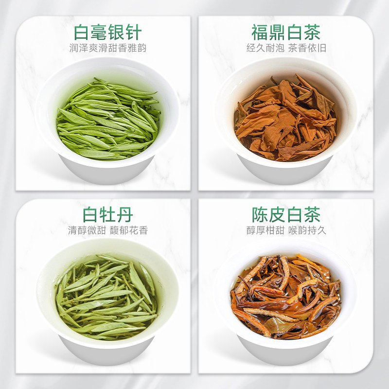

非遗基础信息
- 项目名称：白茶制作技艺（福鼎白茶制作技艺）
- 主产区域：福建省福鼎市及其白茶核心产区
- 国家级非遗：2011 年列入国家级非物质文化遗产代表性项目名录
- 联合国教科文组织：2022 年作为“中国传统制茶技艺及其相关习俗”的组成部分进入人类非物质文化遗产代表作名录
本页梳理白茶制作技艺（福鼎白茶制作技艺）的项目背景、名录信息与发展节点，帮助浏览者快速建立对福鼎白茶非遗价值的整体认知。

对于首次接触福鼎白茶的浏览者而言，产地景观是建立地域认知的有效方式，因此本页优先呈现茶山实景与产区风貌。
把分散的历史信息整理成连续可读的时间线，用户更容易在短时间内抓住项目价值。
本页通过景观、工艺与茶品三个维度组织信息，让非遗内容从文字资料转化为更易理解的网页表达。


